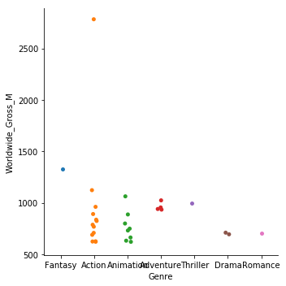
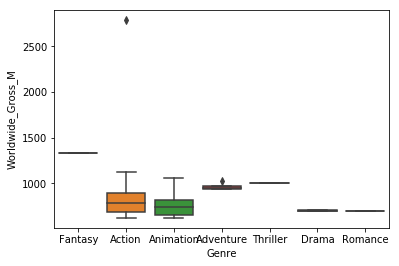

Grafico Faturamento x Custos dos Filmes
De acordo com o gráfico scatterplot movies, existe uma tendencia de quando maior o orçamento, maior será o faturamento. Existe um caso especial do filme Avatar que teve um faturamento muito maior que o normal esperado
Grafico de Agrupamento Faturamento x Genero
Grafico de Agrupamento Faturamento x Genero